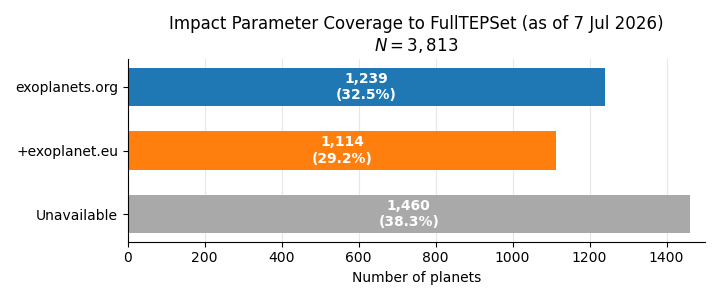
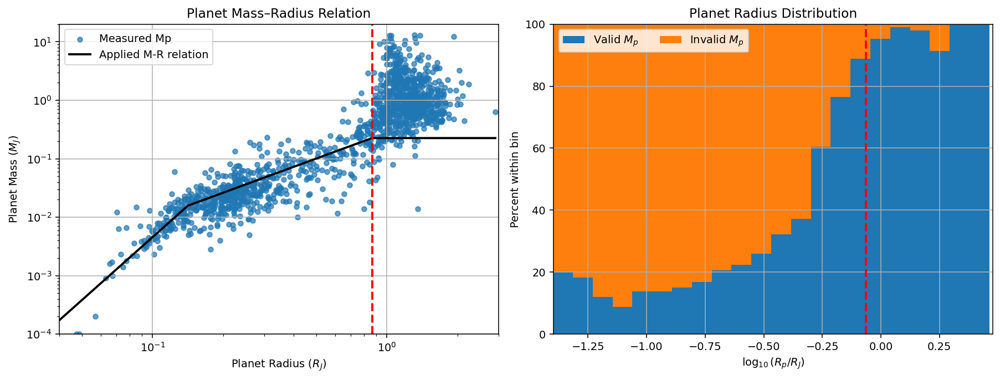
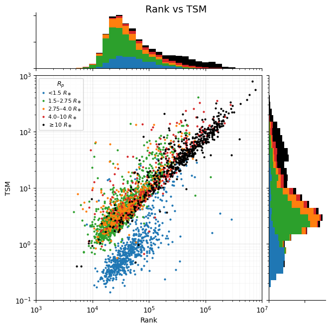
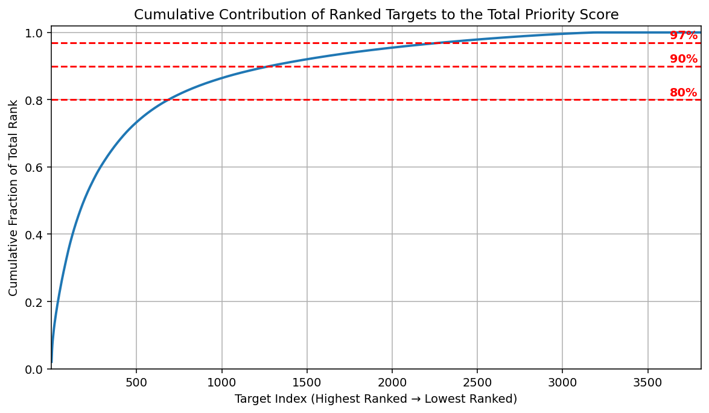
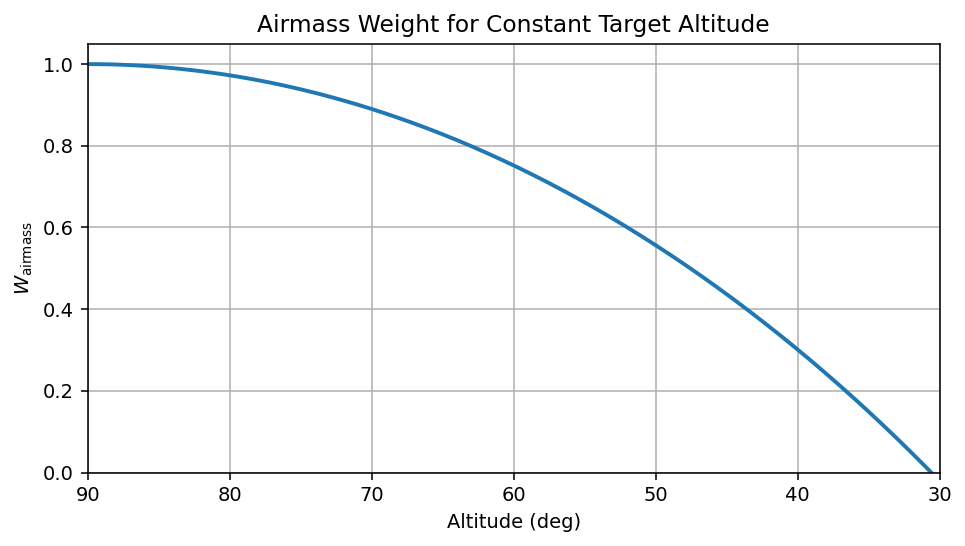
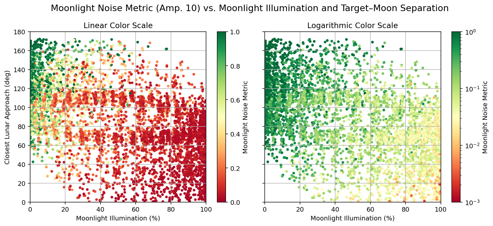
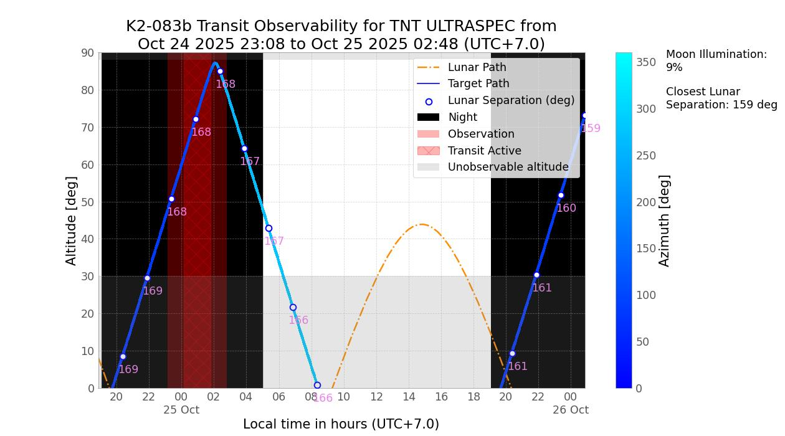

PREFACE Workflow
This page describes the internal processing pipeline executed by run_preface().
The pipeline is divided into two broad phases: Phase One selects the most promising
exoplanet targets by applying a selection metric, and Phase Two determines when those
targets are observable from the chosen telescope location. The final output is a ranked
list of transit events to direct observing efforts.
The sections below describe each processing step in the order it is executed.
Phase One
Phase One produces a ranked subset of TEPCat planets deemed viable for transmission spectroscopy. It proceeds through seven steps:
ModCheck: Assembles the TEPCat exoplanet catalogueImpactMerger: Recovers literature impact parameters from exoplanets.orgExoplanetseuImpactMerger: Recovers literature impact parameters from exoplanets.euWorkingTEPSetBuilder: Calculates all remaining telescope- and time-independent parameters for selection metric calculationRankMaker: Calculates the selection metric for each planet from the working TEPCat datasetCutter: Calculates the metric cutoff threshold, where planets with the metric lower than the threshold are deemed “non-viable”ViabilitySplitter: Divides full ranked catalogue into two output catalogues deemed “viable” and “non-viable”
Step 1: ModCheck
The input catalogue is primarily drawn from the Transiting ExoPlanet Catalogue (TEPCat), maintained by Dr John Southworth at Keele University. TEPCat was selected over alternatives such as exoplanets.eu for two reasons critical to pipeline operation: it provides transit durations (\(t_{14}\)) for every entry, which is absent from most other catalogues yet essential for Phase Two transit predictions, and it provides complete mid-transit ephemerides in BJDTDB, which enables accurate prediction of future transit times.
TEPCat is distributed as three separate files:
allplanets-csv.csv: well-studied objects with full parameter sets.kepplanets-csv.csv: less-studied objects, typically faint Kepler targets.observables.csv: coordinates, magnitudes, ephemerides, durations, and depths for all planets in both of the above files.
First, ModCheck checks the modification timestamp of each local copy. If any file is older than
seven days, an updated version is downloaded from the TEPCat website before proceeding.
Then, the three files are read into pandas DataFrames, cleaned, and concatenated into a single
working table with consistent column headers. Any planet entry missing either transit duration (\(t_{14}\))
or transit depth (\(\delta\)) is removed, as both quantities are required at multiple downstream stages.
Brown dwarf entries are also excluded. Finally, the cleaned catalogue is saved as FullTEPSet.csv and passed to the next step.
Step 2: ImpactMerger
The impact parameter \(b\) is not provided by TEPCat’s standard data files, yet it is
required by Phase Two’s transit geometry model. This step performs a first-pass recovery by
cross-matching FullTEPSet.csv against the Exoplanet Orbit Database (exoplanets.org),
which was found to hold the largest number of literature \(b\)-values at the time of
original pipeline development. Planet names are normalised between the two
catalogues to ensure consistent matching, and every planet that appears in both catalogues
receives its literature impact parameter at this stage. The result is written out as
FullTEPSetWithExoOrgImpacts.csv.
Step 3: ExoplanetseuImpactMerger
For planets still missing \(b\) after Step 2, a second cross-match is performed
against a snapshot of the exoplanet.eu catalogue (automatically updated if older than 7 days).
Although this catalogue holds fewer \(b\)-values overall, it tends to be more up to date
for recent discoveries. Planets appearing in both catalogues receive their impact parameters in this pass.
The updated catalogue is saved as FullTEPSetWithAllImpacts.csv.
{kind=link}

Figure. Retrieval of transit impact parameters to FullTEPSet as of 7 July 2026. Includes the number of planets whose b-values were obtained from exoplanets.org (blue), additionally recovered from exoplanet.eu (orange), and those unavailable from either source (gray).
Step 4: WorkingTEPSetBuilder
At this stage, the catalogue contains all available literature parameters but is still
missing several quantities required by the metric and by Phase Two. WorkingTEPSetBuilder
derives these internally.
Stellar magnitudes. TEPCat provides V- and K-band magnitudes for parent stars, but many instruments use filters outside these bands. Magnitudes in U, B, R, and I are recovered by applying published spectral type conversion tables (Mamajek 2017; Pecaut & Mamajek 2013) to each star’s effective temperature and V-band magnitude. Sloan \(g\), \(r\), \(i\), and \(z\) magnitudes are recovered using the empirical colour transformations of Jordi et al. (2007). Specialist longpass filters (e.g. the Liverpool Telescope RISE 720 nm filter) are handled using a flux-additivity approximation.
Semi-major axis. Where not already present, the semi-major axis is computed from Kepler’s Third Law:
where \(P\) is the orbital period in years and \(M_*\) is the stellar mass in solar masses. The result is expressed in AU.
Equilibrium temperature. Planet equilibrium temperatures are computed assuming zero Bond albedo:
where \(T_\mathrm{eff}\) is the stellar effective temperature and \(R_*\) is the stellar radius expressed in AU.
Remaining impact parameters. For the minority of planets for which \(b\) could not be recovered from either external catalogue in Steps 2-3, an estimate is computed analytically using the transit geometry model of Seager & Mallén-Ornelas (2003):
Planet mass estimation. For planets lacking a literature mass, PREFACE estimates \(M_p\) from the planet’s radius using the continuous mass-radius-temperature relation of Edmondson et al. (2023):
Regime |
Condition |
Power-law applied |
|---|---|---|
Rocky |
\(R_p < 1.580 \,R_\oplus\) |
\(M_p = \left(R_p / 1.01\right)^{1/0.28}\,M_\oplus\) |
Neptunian |
\(1.580 \leq R_p < 9.683\,R_\oplus\) |
\(M_p = \left(R_p / 0.53\right)^{1/0.68}\,M_\oplus\) |
Jovian (degenerate) |
\(R_p \geq 9.683\,R_\oplus\) |
\(M_p = 71.70\,M_\oplus\) |
The Neptunian-Jovian boundary is defined as the radius at which the mass-radius relation becomes degenerate for a Jovian planet with an equilibrium temperature of \(T_\mathrm{eq} = 500\,\mathrm{K}\). Beyond this radius, the mass-radius relation becomes degenerate, and a unique mass estimate is not recoverable from radius alone, therefore a conservative lower-bound mass estimate at the boundary is given. The final estimated mass is then converted from Earth masses to Jupiter masses before being stored.
{kind=link}

Figure. Left: Planet mass as a function of planetary radius for the ranked target sample. Right: Distribution of planetary radii, showing the fraction of targets with measured (blue) and unmeasured (orange) masses within each radius bin.
Step 5: RankMaker
For each planet in the working catalogue, RankMaker uses the chosen instrument’s detector
properties to compute an optimum exposure time and an approximate signal-to-noise ratio per planet.
These quantities are used to evaluate the Phase One “decision metric”, which ranks planets
by their expected spectroscopic return for the given instrument and filter combination.
The decision metric. Metric scores are computed for all four available metric modes simultaneously:
Rank: the standard photometric transmission spectroscopy metric (Morgan et al. 2019):
where
contains all telescope-dependent variables.
Habitable_Rank: the standard metric restricted to planets in or near the habitable zone of their host star. This effectively sets \(T_\mathrm{eq} = 1\) for all targets, which can be followed by an application of a temperature mask afterwards.Multi_Transit_Rank: a metric weighted towards planets with frequent transits, suited to long-term monitoring campaigns:
Multi_Transit_Habitable_Rank: the habitable-zone variant of the multi-transit metric.
The full catalogue is sorted by the standard Rank score from highest to lowest and
saved as a ranked CSV. All four metric columns are retained so that the user can switch
metric mode (via metric_mode) without rerunning Phase One from scratch.
Note
Exposure times and SNR values produced at this step are meaningful only in a relative sense. They are proportionality estimates used for ranking and are not a substitute for a dedicated exposure-time calculator when planning actual observations.
Transmission Spectroscopy Metric (TSM). In addition to the decision metric, PREFACE also evaluates the Transmission Spectroscopy Metric (TSM) of Kempton et al. (2018):
where \(R_p\) and \(M_p\) are in Earth radii and masses respectively, \(T_\mathrm{eq}\) is the calculated equilibrium temperature in Kelvins, \(R_\star\) is the stellar radius in solar radii, \(m_J\) is the host star’s J-band magnitude, and \(\mathcal{S}\) is an empirically calibrated scale factor.
The planetary mass is taken from the literature when available; otherwise, the estimated mass described above is adopted. The scale factor in the Jovian regime is adopted to be 1, as the original calibration does not extend beyond 10 \(R_\oplus\).
Planet regime |
Condition |
Scale factor \(S\) |
|---|---|---|
Terrestrial |
\(R_p < 1.5\,R_\oplus\) |
0.190 |
Super-Earth |
\(1.5 \leq R_p < 2.75\,R_\oplus\) |
1.26 |
Sub-Neptune |
\(2.75 \leq R_p < 4.0\,R_\oplus\) |
1.28 |
Sub-Jovian |
\(4.0 \leq R_p < 10.0\,R_\oplus\) |
1.15 |
Jovian |
\(R_p \geq 10.0\,R_\oplus\) |
1 |
{kind=link}

Figure. Planet rank compared to their respective TSMs in log-log space, with points colored according to the five TSM scale factor regimes.
Step 6: Cutter
Because the Phase One metric is a proportionality rather than an absolute physical quantity, a fixed, physically motivated viability threshold cannot be defined. Instead, PREFACE uses the cumulative distribution of rank scores for a reference calibration instrument to place a data-driven cut.
VLT/FORS2 (600RI+19 grism) is chosen as the calibration instrument for spectroscopy, because they access the largest viable subsets of targets, making the calibration cut as inclusive as possible. No corresponding calibration instrument is defined for photometry.
The Cutter evaluates the cumulative rank-score distribution for the calibration instrument
and identifies the minimum absolute rank score at which the cumulative fraction equals
viable_cumulative_cut (e.g. 0.97). This threshold score is returned and passed
to the ViabilitySplitter.
{kind=link}

Figure. Cumulative fraction of the total ranking score contributed by the ranked target list. Horizontal dashed lines indicate the 0.80, 0.90, and 0.97 cumulative score thresholds.
Step 7: ViabilitySplitter
Using the threshold score from the Cutter, ViabilitySplitter divides the full ranked
catalogue into two output files:
Viable targets: planets scoring at or above the threshold for the user’s chosen instrument. These are passed to Phase Two for transit scheduling.
Non-viable targets: planets below the threshold. These are written to the
nonviable_target_list/output directory for reference but take no further part in the pipeline.
Both files are saved to the phase_1/ output directory. The number of viable targets
depends on both the chosen instrument and the value of viable_cumulative_cut; a cut
of 0.90 to 0.97 is recommended as it captures all planets in the productive upper
“knee” of the cumulative distribution while excluding the long low-viability tail.
Phase Two
Phase Two takes the viable target list produced by Phase One and returns a ranked schedule of observable transit events within the user-specified observing window. For each planet, it propagates the transit ephemeris forward, evaluates every predicted event against astronomical night and altitude constraints, scores each observable event using an airmass- weighted transit coverage model and a moonlight noise model, and combines these with the Phase One metric score to produce a final event weight.
Phase Two is the most computationally intensive stage of the pipeline, running at
approximately 1-2 seconds per target for a viable target list of ~1000 planets in
an 8-month observation window. Multiprocessing is applied at this stage using joblib,
distributing the workload across available CPU cores as configured by
MultiprocessingConfigurations.
PhaseTwo proceeds through three steps:
MultiprocessingWrapper: Initializes necessary lookup tables andjoblibmultiprocessing for Phase TwoMultiprocessingProcess: For each planet, find and rank viable transit events in the given observing windowPostCleaner: AssemblesMultiprocessingProcessoutputs for each planet, then generates two final ranked transit datasets
Step 1: MultiprocessingWrapper
In order to reduce per-planet runtime during MultiprocessingProcess, MultiprocessingWrapper first
constructs the necessary lookup tables to be used across all parallel jobs, then dispatches those jobs via joblib.
The following preparatory steps are executed in the following sequence:
IERS table update. Downloads or refreshes the IERS-A Earth orientation table required by Astropy for accurate coordinate transformations, falling back to an IERS mirror on network timeout. The cached copy is refreshed automatically if older than 7 days.
Telescope location & timezone resolution. Gathers the IANA timezone of the telescope via its stored latitude and longitude for local-time handling during graphical output during multiprocessing.
Sun & Moon AltAz lookup table. Precomputes Sun and Moon altitude/azimuth for every minute across the provided
observation window (padded by 2 days). Positions are first computed at 10-minute precision in the local AltAz frame,
then up-sampled to 1-minute resolution via cubic spline interpolation in Cartesian coordinates. Saved as a compressed Parquet file.
Lunar brightness lookup table. If toggle_moonlight_noise is enabled, precomputes the Moon’s hourly apparent magnitude
using the Allen (1976) empirical phase-angle formula
with lunar phase angles \(\phi\) from pyephem and per-filter full-Moon magnitudes
empirically calculated from Toledano et al. (2024)’s LIME toolbox sampling during October 2025 to May 2026 at TNT ULTRASPEC.
Per-filter effective wavelengths \(\lambda\) are retrieved from Bessell et al. (1998) and Fukugita et al. (1996).
Saved as a compressed Parquet file.
With all lookup tables in place, MultiprocessingProcess is then dispatched per viable planet as a joblib job, with progress
tracked via tqdm.
Step 2: MultiprocessingProcess
MultiprocessingProcess is the core computational step of Phase Two, and the most computationally
expensive section of the PREFACE pipeline. For this reason, it is dispatched once per viable planet as a
joblib job. MultiprocessingProcess is divided into the following subprocesses: ephemeris propagation,
transit contact times calculation, target local coordinate computation, nighttime observability classification,
airmass-weighted scoring, transit coverage scoring, moonlight noise scoring, final transit decision metric
scoring, and optional graphical output for every predicted transit event within the observing window.
Note
TEPCat ephemerides are given in Barycentric Julian Date in Barycentric Dynamical Time (BJDTDB), which can differ from standard UTC by up to approximately 10 minutes due to relativistic corrections and accumulated leap seconds. This offset is appropriately handled internally within the pipeline.
Ephemeris propagation. Transit first-contact times \(T_1\) are propagated forward from the TEPCat reference ephemeris. The reference mid-transit time \(T_0\) (in BJDTDB) is converted to a first-contact time by subtracting half the transit duration \(t_{14}\), and the integer epoch range spanning the observing window is computed. For each epoch \(n\), the transit start time \(T_{1,n}\) and its associated timing uncertainty \(\sigma_n\) are
Transit contact time calculation. For each predicted transit, the four contact times are derived from the transit geometry. The mid-transit \(T_0\) and fourth contact \(T_4\) follow directly from \(T_1\) and \(t_{14}\)
The internal contacts \(T_2\) and \(T_3\) are derived from the transit geometry model of Seager & Mallén-Ornelas (2003), from which
and the ingress/egress duration
follows. Subsequently,
For grazing transits where impact parameter \(b = 0\) and \(T_2\) is unphysical, \(T_2\) and \(T_3\) are both set to \(T_0\) and the event is treated as having no flat bottom.
Finally, One-hour baseline windows are appended on either side of the transit:
Target local coordinate computation.
The target’s altitude and azimuth over time are computed for a 30-hour window (from 12 hours before closest
midnight to 18 hours after) via Astropy’s transform_to() method. To minimise per-event overhead, all time
windows are batched and the altitude/azimuth coordinate transforms are performed simultaneously at
10-minute resolution in a single vectorised call, then interpolated to 1-minute resolution via cubic spline
in Cartesian coordinates. Sun and Moon positions are drawn directly from the precomputed lookup table.
Nighttime observability classification. First, the start and end of astronomical night are identified by detecting zero-crossings of the Sun’s altitude profile relative to the \(-18°\) astronomical twilight threshold, distinguishing sunfall (descending) from sunrise (ascending) crossings. Several multi-night edge cases are handled explicitly such that the night starts/ends are bounded by the 30-hour window and contain the corresponding transit’s mid-transit time.
Then, four binary altitude spot-check conditions are evaluated over the transit time window, nighttime window, and transit-night overlap windows.
Target reaches minimum altitude: target exceeds observable altitude at any point during the transit or night.
Target above minimum altitude for entire transit: target remains above \(30°\) throughout the full transit-plus-baseline window.
Target reaches minimum altitude at night: target exceeds \(30°\) at some point during the observing night.
Target reaches minimum altitude during transit at night: target exceeds \(30°\) during the overlap of the transit window and the night.
These conditions are combined into strict (F) and lax (P) altitude sets and
evaluated against timing conditions on how the transit overlaps the night, producing one of the
following internal rank markers:
Rank |
Condition |
|---|---|
|
Night contains full transit + baselines.
|
|
Night contains full transit + baselines.
|
|
Night contains full transit but not full baselines.
|
|
Night contains full transit but not full baselines.
|
|
Night contains partial transits.
|
|
Night contains partial transits.
|
|
No part of the transit is observable. Event is discarded. |
where the “minimum observable altitude” is \(30°\), which corresponds to an airmass of 2.
The classification follows a top-down hierarchy: the strictest condition (03_F) is tested
first, and the event falls through until a matching condition is found.
Integration limits.
For events ranked 01 or above, the usable observing window is bounded by integration limits
\(L_1\) and \(L_2\), defined as whichever is more
restrictive between astronomical night and the times at which the target crosses the minimum
observable altitude.
For F-ranked events, where the target remains above \(30°\) throughout the transit:
For P-ranked events, the minimum-altitude crossing time(s) of the target’s path are
identified by detecting zero-crossings of altitude relative to \(30°\). A conditional logic
gate handles scenarios including one or two crossing points, a rising or setting target, and
varying orderings of the sunfall, altitude crossing, and transit contact times. Any event for which
\(L_2 \leq L_1\) after limit assignment is downgraded to rank X and discarded.
Airmass-weighted scoring. The atmospheric seeing PSF \(\Theta\) scales with airmass \(X = \csc(i)\) at an altitude angle of \(i\), as \(\Theta \propto \lambda^{-1/5} \cdot X^{3/5}\). To penalise events at low altitude, an airmass weight is computed by the inverse of an intergral that describes how the airmass changes over the usable observing window:
The weight is amended to return a value of 1 for targets constantly at the zenith, decline steeply as altitude decreases, and have a value of 0 for targets constantly at \(30^\circ\) altitude.
{kind=link}

Figure. Airmass weighting function for a target observed at a constant altitude.
Transit coverage scoring. Baseline coverage before and after the transit is essential for fitting the light curve and recovering limb-darkening parameters. The observable fraction of each of five segments within \([L_1, L_2]\) is evaluated:
Pre-transit baseline (\(T_\mathrm{BaseStart}\) to \(T_1\))
Ingress (\(T_1\) to \(T_2\))
Full mid-transit (\(T_2\) to \(T_3\))
Egress (\(T_3\) to \(T_4\))
Post-transit baseline (\(T_4\) to \(T_\mathrm{BaseEnd}\))
For each segment, the observable sub-interval is clipped to the overlap of the segment with the visibility window \([L_1, L_2]\):
Segment |
Lower clipped limit |
Upper clipped limit |
|---|---|---|
Pre-transit baseline |
\(L_{\mathrm{BS}1} = \max(L_1,\,T_\mathrm{BaseStart})\) |
\(L_{\mathrm{BS}2} = \min(L_2,\,T_1)\) |
Ingress |
\(L_{\mathrm{In}1} = \max(L_1,\,T_1)\) |
\(L_{\mathrm{In}2} = \min(L_2,\,T_2)\) |
Full mid-transit |
\(L_{\mathrm{Tr}1} = \max(L_1,\,T_2)\) |
\(L_{\mathrm{Tr}2} = \min(L_2,\,T_3)\) |
Egress |
\(L_{\mathrm{Eg}1} = \max(L_1,\,T_3)\) |
\(L_{\mathrm{Eg}2} = \min(L_2,\,T_4)\) |
Post-transit baseline |
\(L_{\mathrm{BE}1} = \max(L_1,\,T_4)\) |
\(L_{\mathrm{BE}2} = \min(L_2,\,T_\mathrm{BaseEnd})\) |
In cases where the segment lies entirely outside the visibility window, both the clipped limits are set to zero.
These clipped lengths are combined into three weight components:
To which the composite event weight is:
For grazing transits (\(T_2 = T_3\), so \(W_\mathrm{trans}\) is undefined), the mid-transit term is omitted:
Moonlight noise scoring.
If toggle_moonlight_noise is enabled, a moonlight noise weight is computed using the atmospheric
scattering model of Winkler (2022), incorporating both Rayleigh and Mie scattering components.
The scattered moonlight intensity after one-time scattering \(I_{L1}\) (in flux/arcsec2) is modelled as:
where the composite scattering phase function \(p(\theta)\) is a weighted combination of the Rayleigh and Mie phase functions:
The quantities appearing in these expressions are defined as follows:
Symbol |
Description |
|---|---|
\(F^*_L\) |
Top-of-atmosphere (TOA) lunar flux (in flux),
|
\(\zeta\) |
Zenith angle of the observation target |
\(z\) |
Zenith angle of the Moon |
\(\theta\) |
Moon-target angular separation angle |
\(\tau_R\) |
Rayleigh scattering optical depth |
\(\tau_M\) |
Mie (aerosol) scattering optical depth,
|
\(\tau_A\) |
Absorption optical depth,
|
\(\tau\) |
Total optical depth (\(\tau = \tau_R + \tau_M + \tau_A\)) |
\(\chi\) |
Rayleigh depolarisation factor, fixed at \(\chi = 0.0148\) |
\(g\) |
Aerosol asymmetry factor,
|
The Rayleigh scattering optical depth is computed from the instrument altitude and filter wavelength as:
where \(h\) is the instrument altitude in metres, \(H = 8500\) m is Earth’s scale height, and \(\lambda\) is the filter’s effective wavelength in nm.
The scattered moonlight intensity \(I_{L1}\) is then converted from flux/arcsec2 to mag/arcsec2 (\(\mu_\mathrm{bg,moon}\)) using filter flux zeropoints. The sky brightness contribution over a sky patch of area \(A\) (arcsec2) is:
The SNR reduction factor, referred to as the moonlight noise weight, is then derived from the ratio of the new and old detectability scores \(\mathcal{D}\), which are directly proportional to the SNR. The resulting moonlight noise weight is:
where \(\gamma\) is a configurable “moonlight amplification factor” that adjusts the effective moon background brightness to provide stronger suppression under bright moonlight conditions. The default value (\(\gamma = 10\)) is calibrated such that, for a full-moon sky background of \(\mu_\mathrm{bg,moon} = 17\,\mathrm{mag/arcsec^2}\), a sky patch of area \(A = 10\,\mathrm{arcsec^2}\), and a target of magnitude \(m_* = 12\), the resulting moonlight noise weight is approximately \(W_\mathrm{Moon} \approx 0.1\).
{kind=link}

Figure. Moonlight noise metric (Default aerosol parameters, Amplification factor 10) as a function of lunar illumination and the closest Moon-target separation. If you find the suppression too aggressive, try reducing the amplification factor to 8-9.
If toggle_moonlight_noise is disabled, \(W_\mathrm{Moon} = 1\).
Final transit decision metric. Finally, the final decision metric for a given transit event is the product of four terms:
where \(\mathcal{D}\) is the Phase One metric score for the planet under the chosen
metric_mode. This formulation ensures the final ranking reflects both the intrinsic
spectroscopic value of a target (Phase One) and the practical quality of the specific observing
opportunity (Phase Two).
Graphical output.
If toggle_graph_outputs is enabled and the event weight \(W_\mathrm{event}\) meets or exceeds
event_weight_graph_threshold, a sky chart is generated showing the target’s altitude path
(coloured by azimuth), the Moon’s path, the observing night bounded by astronomical twilight,
the transit window and baseline shaded in red, and altitude floor and ceiling limits. Moon illumination
and closest lunar separation are annotated. Plots are saved as JPG files in phase_2/graph/ per transit
labelled with the event weight, internal rank, planet name, instrument, and transit time in local time.
{kind=link}

Figure. Example graphical output for K2-83b predicted at TNT ULTRASPEC.
Per-planet output.
All computed quantities (contact times, internal rank, UTC observation start and end, airmass
metric, segment weights, event weight, moon noise metric, and final metric) are written to an
individual CSV in phase_2/individual_planets/. Internal state lists are cleared at the end
of each planet’s processing to prepare for the next job.
Step 3: PostCleaner
Once all per-planet event files have been generated by the multiprocessing pool,
PostCleaner assembles the final pipeline outputs:
Full event list. All per-planet CSV files are read then merged into a single DataFrame.
Unobservable events (internal rank X) are removed. The remaining events are sorted by
final transit metric \(\mathcal{D}_\mathrm{final}\) from highest to lowest and
written to phase_2/full_ranked_event_list/. This file is the primary output of the pipeline
and can be used directly to construct observing schedules.
Cumulative observability scores. For each planet, all events for which event weight
\(W_\mathrm{event} > 0.5\) (full transit capture with at least 50% baseline coverage
on both sides) are identified. Their \(\cal{D}_\mathrm{final}\) scores are summed
to produce a “cumulative observability score”, and the total count of qualifying events is
recorded. These results are written to phase_2/cumulative_observability_scores/.
This product is intended to help campaign planners distinguish between planets that offer a single high-priority window and those that present multiple well-scored opportunities throughout the observation window.
Note
Intermediate CSV files written to the pipeline’s internal data store during the run
can be removed after completion using wipe_intermediate_csvs().